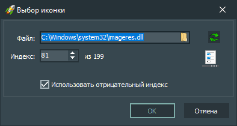

Элементы интерфейса:
-
Файл
Содержит путь к файлу, из которого будет загружена иконка для кнопки.
-
Индекс
Содержит индекс иконки в файле, указанном в параметре "Файл".
-
Кнопка «OK»
Подтверждает изменение иконки для выбранной кнопки.
-
Кнопка «Отмена»
Не подтверждает изменение иконки для выбранной кнопки.
Горячие клавиши:
-
Alt + F4
После нажатия этой комбинации клавиш окно с настройками иконки для кнопки закрывается без применения изменений.
-
Enter
После нажатия этой клавиши окно с настройками иконки для кнопки закрывается с применением изменений.
-
Esc
После нажатия этой клавиши окно с настройками иконки для кнопки закрывается без применения изменений.